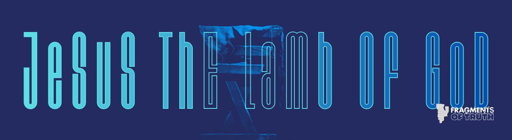

P52 Manuscript, Recto: John 18:31-33
Recto (Front Side)
The recto is the front side of the papyrus sheet.
Here, Jesus is questioned by Pilate, and the nature of His kingship is brought into focus.
Early Christians often read Scripture aloud, and this side would have been turned, handled, and shared within the community.

P52 Recto • John 18:31-33
Greek Text (Reconstructed)
… Οἱ Ἰουδαῖοι εἶπον αὐτῷ· Ἡμῖν οὐκ ἔξεστιν ἀποκτεῖναι οὐδένα·
ἵνα ὁ λόγος τοῦ Ἰησοῦ πληρωθῇ
ὃν εἶπεν σημαίνων ποίῳ θανάτῳ ἤμελλεν ἀποθνῄσκειν.
Εἰσῆλθεν οὖν πάλιν εἰς τὸ πραιτώριον ὁ Πιλᾶτος
καὶ ἐφώνησεν τὸν Ἰησοῦν
καὶ εἶπεν αὐτῷ·
Σὺ εἶ ὁ βασιλεὺς τῶν Ἰουδαίων;
Greek Transliteration
… Hoi Ioudaioi eipan autō:
Hēmin ouk exestin apokteinai oudena,
hina ho logos tou Iēsou plērōthē
hon eipen sēmainōn poiō thanatō emellen apothnēskein.
Eisēlthen oun palin eis to praitōrion ho Pilatos
kai ephōnēsen ton Iēsoun
kai eipen autō:
Sy ei ho basileus tōn Ioudaiōn?
English Translation (NIV)
“But we have no right to execute anyone,” they objected.
This took place to fulfill what Jesus had said about the kind of death He was going to die.
Pilate then went back inside the palace, summoned Jesus and asked Him,
“Are you the king of the Jews?”
Historical Context
The recto (front side) of P52 places us within the Roman trial of Jesus. Authority, responsibility, and
guilt are being shifted between Jewish leaders and Roman power.
This fragment shows that:
• The Gospel of John was already circulating very early
• The trial narrative was central to Christian proclamation
• Jesus’ kingship was questioned not in myth, but in history
The wording reflects a courtroom atmosphere—measured, serious, and weighty.
Reflection
Before the cross, before the crown, there was a question:
“Are You the king?”
The Gospel preserves this moment because it forces every reader to confront the same question—not as spectators, but as participants.